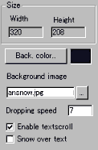
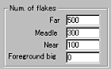
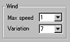

|
This applet visualises realistic snow flakes as a layer over a
selected image, preferably the one with snow already present on
the ground. This looks more natural.
[More technical information
about the available parameters can be found here.]
Most parameters are self-explanatory and you can
always see brief description of each parameter by moving the mouse
pointer over the wizard.
 |
First select a background image
over which you want to cast snow flakes animation. The size
of the image decides the applet size automatically. Alternatively,
you may want to choose a solid colour for the background. You
can activate textscroller either under or over the snow layers
by checking "Enable textscroll" and "Snow
over text" boxes. |
 |
The snow layers comprises
"Far", "Middle", "Near" and "Foreground"
layers. So, there are 4 different layers of snow flakes animated
independently. |
You can set a number of snow flakes for each layer.
If you enter "0" for any of the layers, that layer will
be disabled. This is not very recommended, because more snow layers
result in more natural effect.
Now, set the snow fall speed at "Dropping speed"
parameter. The value for this can be any number between 1 and 50
(snow disabled if 0).
 |
Additionally, you may want to change
maximum wind speed and fluency of changing directions of the
wind. |
The wind speed varies to produce realistic snow fall, so you can
only set the maximum speed, whose value can be between 0 and 3.
You can also define how fast the wind direction changes at "Variation"
parameter. The value for this takes any integer between 0 and 10.
To disable any of these features, just place "0" at respective
parameter boxes.
We have only discussed about the anfysnow specific
parameters. For generic parameters, please read wizard
section.
Proceed to the textscroll
menu if you have checked the textscroll box; otherwise go to
the expert menu.
|